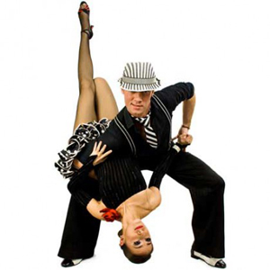
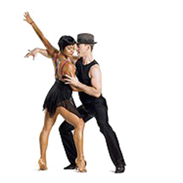

Samba

Samba je tipičan brazilski ples koji ima izvore u starim muzičkim folklornim motivima. Brazil su u 16. veku kolonizovali Portugalci koji su doveli robove iz Afrike. Slično kao i na Kubi, pomešali su se muzički motivi Portugalaca, crnaca i prvobitnih Indijanaca. Razvoj brazilske muzike i plesa bili su pod uticajem obreda u slavu bogova, a afrički izvori su bili prigodne prirode. Na svečanostima se plesalo i po više dana. Jedan od prvih poznatih brazilskih plesova u tim prilikama bio je batuke, što je prvo zajedničko ime za plesove sa tipičnim bočnim kretanjem i on je bio prethodnik sambe. Ime samba je izvedenica iz afričke reči semba, što znači bočno kretanje.
Samba se prvi puta pojavila u Evropi 1924. godine ali je pravi prodor doživela tek 1948. godine u svom pojednostavljenom obliku. Samba je veseo ples pun ritma koji se posebno izražava u stilu koji je nešto različitiji od drugih latinoameričkih plesova.
Za razliku od ostalih latino-američkih plesova koji se plešu na malom prostoru, samba je progresivan ples i parovi prelaze velike delove plesnog podijuma po plesnom pravcu koristeći mnoge korake i okrete kojima samba obiluje. Samba je ples izuzetno bogat figurama koje se izvode u različitim ritmovima.
Rumba
Rumba je vrsta plesa koji je glavni razvoj doživio na Kubi, a potiče iz 16. veka od crnih robova koji su dovedeni iz Afrike. Rumba je ime za više kubanskih plesova u paru, a prije svega znači zabavu, ples.
Kao narodni ples, rumba je ples ljubavi i zavođenja a osnova priče je da žena, upotrebom šarma, pokušava da dominira nad muškarcem. Plesačica u cilju zavođenja koristi uglavnom kukove dok igrač uglavnom koristi celo telo. Koreografije su pune izazovnih elemenata u kojima muškarac biva zaveden a odmah nakon toga odbijen. U izvođenju koreografije rumbe veliku estetsku ulogu imaju pokreti rukama koji prate muziku i koji su rezultat kretanja tela.
Rumba se može plesati na više načina. U svom razvoju se stalno ritmički i oblikovno menjala pa tako poznajemo više vrsta rumbe, od kojih su najpoznatije rumba bolero i rumba kuban. Godine 1930. rumba je došla u Njujork, a iz njega je stigla u Evropu. U početku se u Evropi nije previše raširila, a s vremenom je postala pravo plesno otkriće posebno nakon što su joj Francuzi dali koreografski izrađen oblik. Sa Drugim svjetskim ratom rumba je postala sporija i rafiniranija od originalne rumbe.
Cha-cha-cha
Cha-cha-cha (španski jezik: cha-cha-chá) je latinoamerički ples koji je nastao u Havani na Kubi 1950-ih i ubrzo postao jedan od omiljenijih plesova na takmičenjima u latino-americkim plesovima. U to vreme je izazvao pravu revoluciju, pa se radi njega na hiljade ljudi upisivalo u plesne škole u celom svetu.
Kreator Cha-Cha-Cha muzike je jedan muzičar iz Havane, Enrique Jorrin koji je 1953. godine razvio sporiji Mambo-Cha-Cha-Cha iz prebrzo odsviranog Mamba, ali nije stekao pravu slavu tim pokušajem.
Cha-Cha-Cha je ples koji se uvrštava među najnovije pojave u razvoju afro-kubanske muzike, isto kao i Mambo, prvobitno je postojala samo muzička forma. Cha-Cha-Cha je varijanta Rumbe i Mamba. Relativno brz, pleše se na malom prostoru izričito pun ideja i zaigran ples.
Kubanska muzika, odnosno ples prvo je osvojio Severnu Ameriku, gde je od 1954. godine postao najomiljeniji ples. Isto tako i Evropa je bila otvorena prema plesovima i muzici latino-američkog porekla i vrlo brzo u više zemalja Cha-Cha-Cha je postao vrlo popularan. Svojim čistim, jasnim ritmom i veselim figurama, mnogobrojnim varijacijama ovaj ples se brzo probio. Karakteristika mu je da se skoro svaka njegova osnovna figura može preneti u Rumbu.